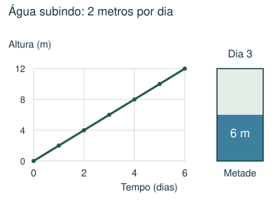
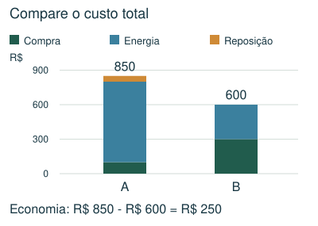
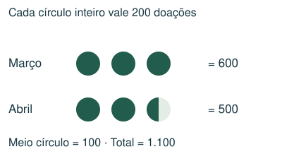
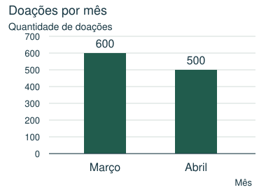
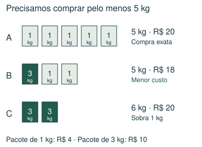

1 Básico
Num pictograma, cada estrela inteira representa 120 livros. Uma turma aparece com 2 estrelas e meia. Quantos livros ela arrecadou?
- A) 240
- B) 180
- C) 360
- D) 300
Meu raciocínio
CAPÍTULO 12 · MATEMÁTICA · 6º ANO
Ler escalas e legendas e justificar comparações.
1. Observe → 2. Entenda → 3. Resolva → 4. Confira
OBSERVE E COMPREENDA · 1

Identifique título, eixos, unidades e legenda. Confira se o eixo começa em zero e quanto representa cada intervalo. Em uma tabela, cruze a linha e a coluna corretas. Não compare altura visual de barras se as escalas forem diferentes.
Se um símbolo representa 200 unidades, meio símbolo representa 100. Para descobrir a legenda a partir de um total, some quantos símbolos inteiros equivalentes aparecem e divida o total por essa quantidade. Ao trocar pictograma por barras, preserve as quantidades e a ordem das categorias.
Num gráfico de altura por tempo, compare a variação vertical com a horizontal. Se a altura cresce de 2 m a 6 m em 2 dias, a taxa é 2 m/dia. Se começa vazio e mantém a taxa, atinge 12 m em 6 dias. Se já começou com água, use apenas a altura que falta.
OBSERVE E COMPREENDA · 2

Calcule cada afirmação separadamente. Custo inicial, reposição e gasto de energia são parcelas diferentes. Divida valores totais pelo número de lâmpadas para obter valores por unidade. “Aproximadamente” permite arredondamento coerente; não transforma valores claramente distintos em iguais.
Primeiro determine a necessidade diária e multiplique pelo número de dias. Depois liste combinações de pacotes que atendem à quantidade. Pode valer a pena comprar um pouco a mais se o preço for menor. Compare custo total de combinações viáveis; menor preço por kg não resolve sozinho toda compra com pacotes indivisíveis.
VAMOS RESOLVER JUNTOS · 1
Um pictograma tem 3 símbolos em março e 2,5 em abril, representando 1.100 doações no total. Quanto vale um símbolo?


São 5,5 símbolos equivalentes. Cada um vale 1.100 ÷ 5,5 = 200 doações. Março: 600; abril: 500.
VAMOS RESOLVER JUNTOS · 2
São necessários 5 kg. Pacotes de 1 kg custam R$ 4 e os de 3 kg custam R$ 10. Qual a compra mais barata?

Cinco pequenos custam R$ 20. Um grande e dois pequenos custam R$ 18. Dois grandes custam R$ 20. A melhor combinação custa R$ 18 e fornece 5 kg.
AGORA É COM VOCÊ
Registre suas contas no caderno ou imprima esta página. Explique como chegou à resposta.
Num pictograma, cada estrela inteira representa 120 livros. Uma turma aparece com 2 estrelas e meia. Quantos livros ela arrecadou?
A tabela mostra a altura da água num reservatório inicialmente vazio. O crescimento continua à mesma taxa. Em que dia a altura chega a 15 m?
| Tempo (dias) | 0 | 2 | 4 |
|---|---|---|---|
| Altura (m) | 0 | 3 | 6 |
Considere os custos de duas opções de lâmpadas na tabela. Qual é a economia total ao escolher B no período mostrado?
| Custo | A | B |
|---|---|---|
| Compra | R$ 100 | R$ 300 |
| Energia | R$ 700 | R$ 300 |
| Reposição | R$ 50 | R$ 0 |
São necessários pelo menos 7 kg de ração. Pacotes de 1 kg custam R$ 4; pacotes de 3 kg custam R$ 9. Qual é o menor custo possível?
Um pictograma mostra 2 símbolos para abril, 3 para maio e 1,5 para junho. Ao todo são 1.300 doações. Quantas doações correspondem a maio?
CONFERIR TAMBÉM É APRENDER
Abra cada resposta depois de tentar resolver.
D) 300. Duas estrelas valem 240; meia vale 60. Total: 300.
C) 10º dia. A taxa é 3 ÷ 2 = 1,5 m/dia. Para 15 m, são 15 ÷ 1,5 = 10 dias.
B) R$ 250. A: 100 + 700 + 50 = 850. B: 300 + 300 + 0 = 600. Economia: 850 − 600 = 250.
A) R$ 22. Dois pacotes grandes e um pequeno fornecem 7 kg por 18 + 4 = 22. Um grande e quatro pequenos custam 25; três grandes custam 27; sete pequenos custam 28.
D) 600. São 6,5 símbolos no total. Um símbolo vale 1.300 ÷ 6,5 = 200. Maio tem 3 × 200 = 600.
Estas questões originais trabalham o tópico. Os recortes incluem resoluções publicadas.